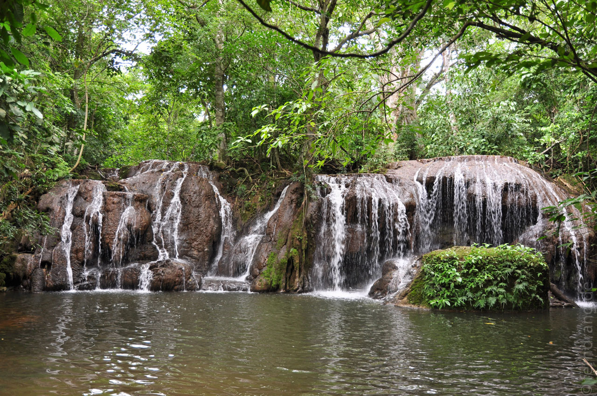
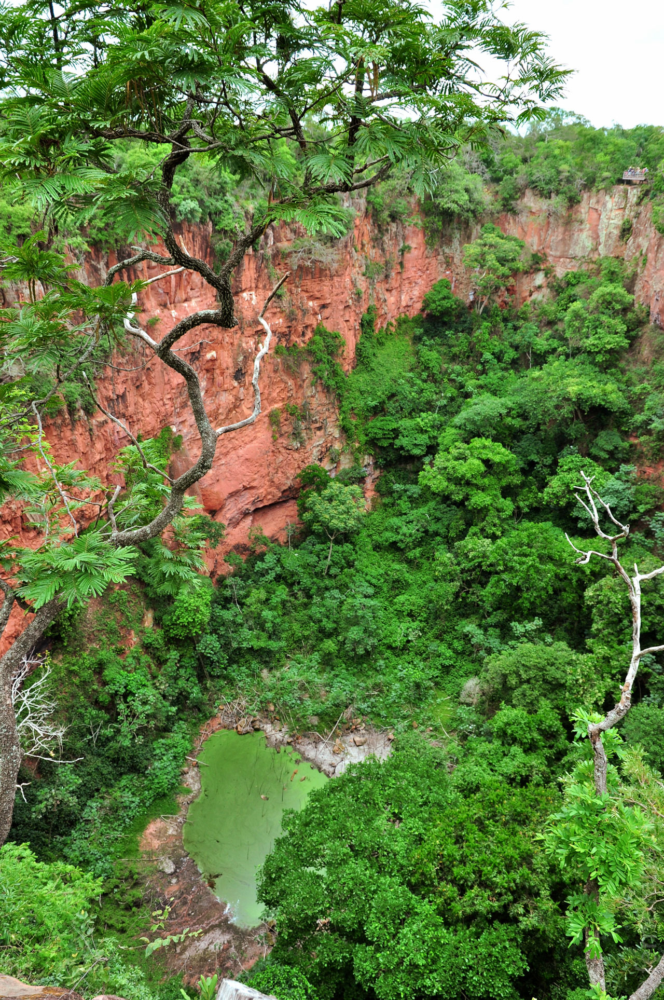
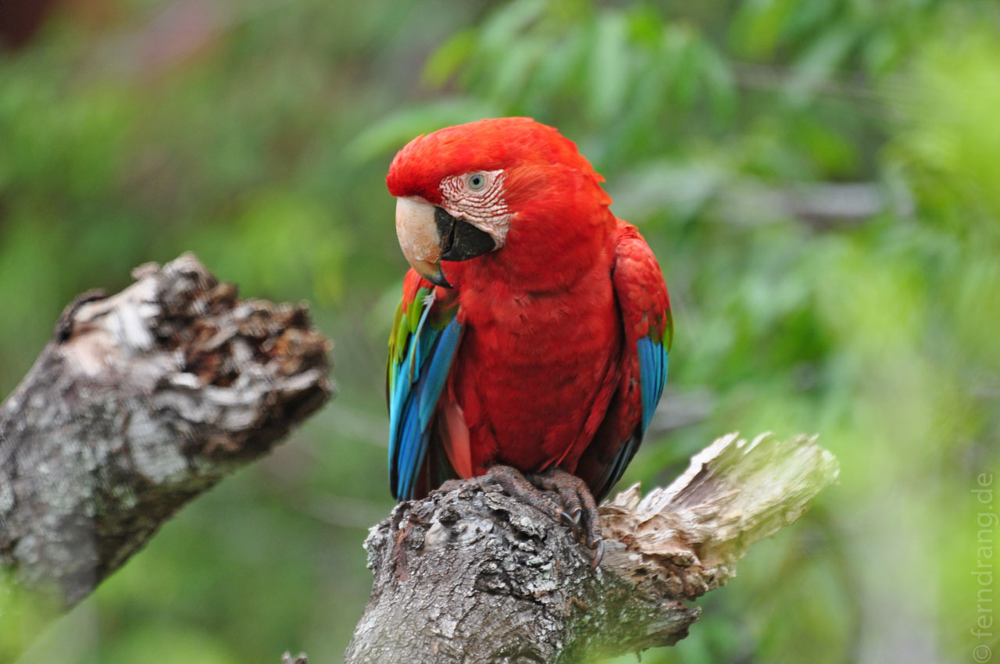
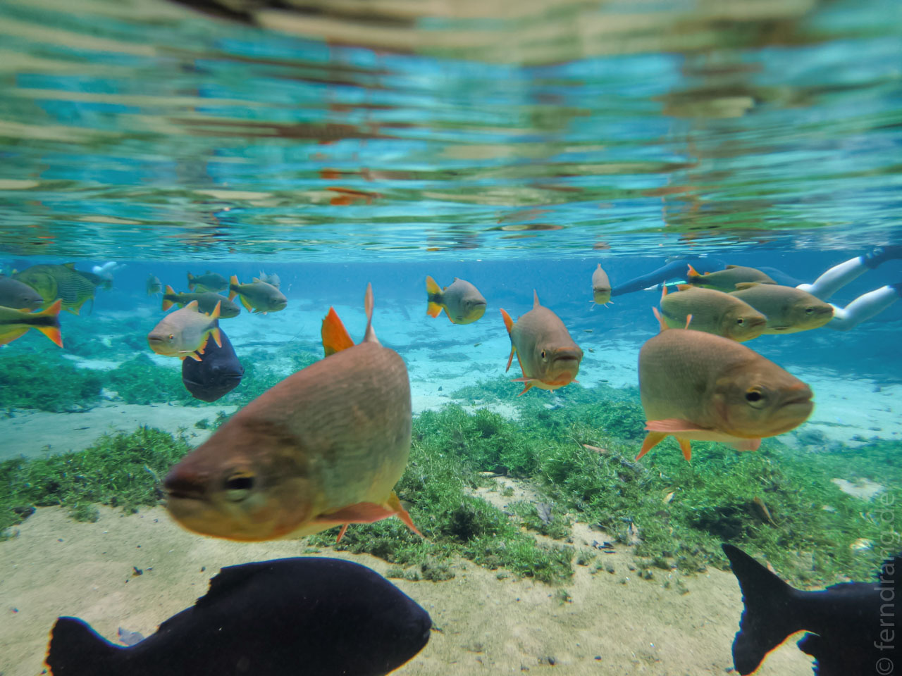
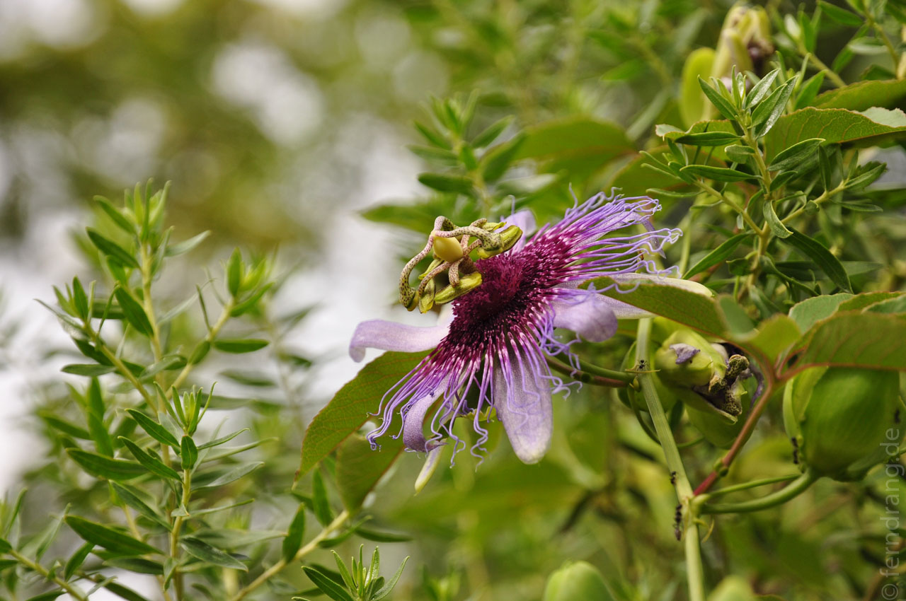
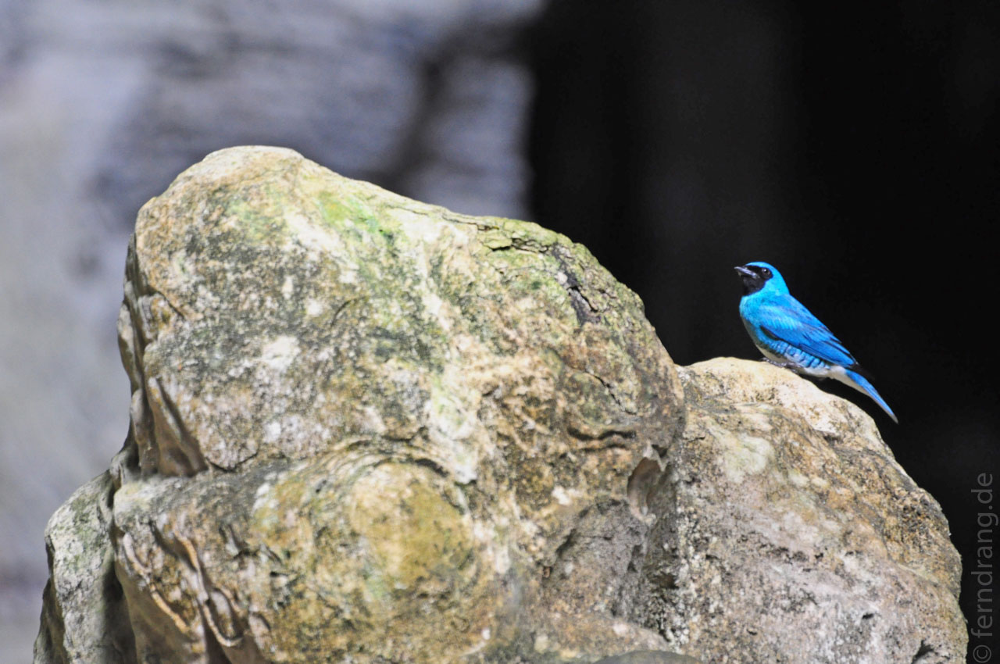
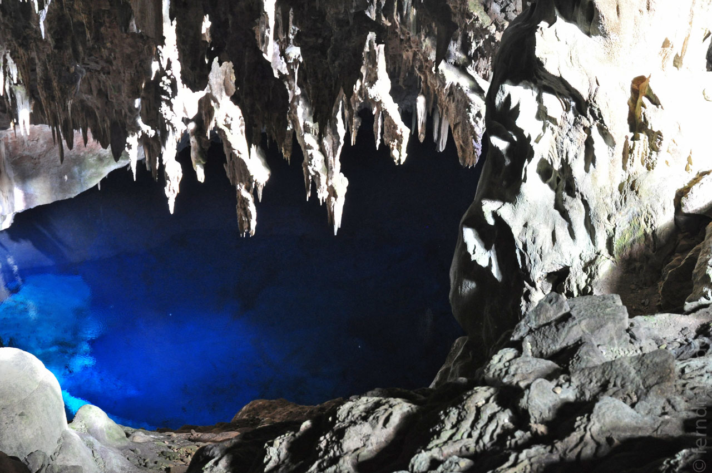
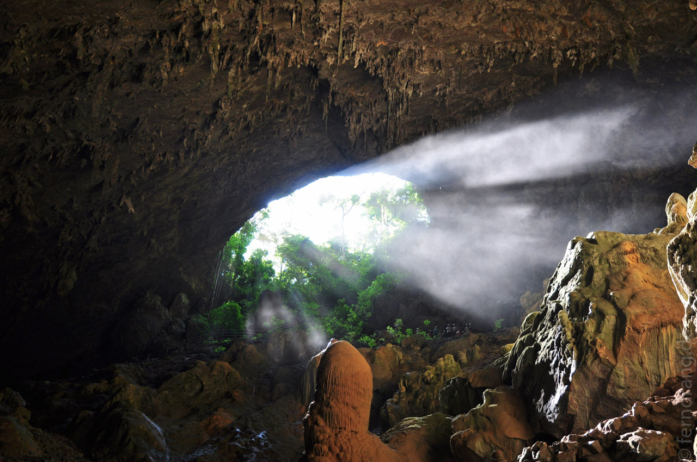

Hatten wir uns beschwert, dass es zu trocken sei? Auf dem Weg nach Bonito sind wir jedenfalls in einige Schauer geraten. Am nächsten Morgen ist auch prompt die erste Tour wegen schlechten Wetters ins Wasser gefallen.
Als Ersatz haben wir den Besuch der Estancia Mimosa vorgezogen. Auf dem Gelände der Farm fällt der kleine Rio Mimosa in sieben malerischen Wasserfällen herab. Ein Wanderweg führt über Treppen und Stege am Fluss entlang. Auf dem Rückweg des kurzen Trips mussten wir an jedem zweiten Wasserfall baden - Tour ist Tour. Es gibt auch ein Gerüst für den obligatorischen 6m-Sprung in einen natürlichen Pool. Der Wald ist unheimlich schön.
Das Städtchen Bonito, das sich als touristisches Basis-Lager für die umliegenden Naturwunder entwickelt hat, wirkt recht neu und konstruiert. Es besteht im Wesentlichen aus zwanzig Nippes-Lädchen auf einem Haufen, die verhindern, dass die Postleitzahl vom Regen fortgespült wird. OK , etwas mehr gibt es schon: Das Highlight ist eine Tukan-Telefonzelle (auf Platz 1 vor der Wels-Telefonzelle). Am Samstag Abend fahren die Männer in großen Pickups mit lauter Kirmes-Musik die Hauptstraße rauf und runter und verleihen der Tristesse einen Hauch Verzweiflung.
Am nächsten Tag sind wir zum Rio da Prata gefahren. Das Flüsschen ist ein beliebtes Ausflugsziel zum Schnorcheln. Nach einem netten Waldspaziergang wirft man sich mit Neoprenanzug und Maske ins Wasser und lässt sich langsam treiben. Das Wasser war wirklich glasklar und voller Fische. Die Könige hier sind die mächtigen Doraden.
Wie die meisten anderen Ziele ist auch dieser Abschnitt des Rio da Prata in Privatbesitz. Die Farmen sind extrem professionell organisiert - vom Gästeempfang über die Pflege der Örtlichkeiten bis zum Mittagessen, das bei einigen zum Ausflug dazu gehört. Die letzten beiden Faziendas haben besser gekocht als alle Restaurants in der Stadt.
Auf dem Rückweg nach Bonito haben wir am Buraco das Araras Halt gemacht. Hier ragt ein 100m tiefes Loch im Land, das zur richtigen Zeit von hunderten Paaren roter Aras zum Nisten genutzt wird. Es war nicht die richtige Zeit, daher haben wir nur zwei gesehen. Aber der Ausblick auf den senkrecht ausgeschnittenen Zylinder lohnt sich auch so. Auf dem Grund gibt es einen kleinen Grützesee, den kinderfressende Kaimane bewohnen. Da die Jungtiere hier nicht weg können, wechseln sie eben bei nächster Gelegenheit ins Lager der Beutetiere. Böse Zungen behaupten, dass hier in wilderen Zeiten auch gerne mal Menschen entsorgt wurden.
Die Restaurants in Bonito sind so fair, Kunden schon von außen durch Abbildungen ihres Speiseangebots zu warnen. Daher haben wir uns auf den Genuss einer köstlichen Papaya beschränkt. An der Hauptstraße war es ohnehin kaum auszuhalten, weil sich die Dorfbeschaller mit ihren Lautsprechern auf der Ladefläche offensichtlich nicht auf Samstage beschränken, und alle anderen auch hupend ausgerastet sind, um ihre Genugtuung kund zu tun, dass hochrangige Politiker wegen Korruption verknackt wurden.
Glücklicherweise konnten wir an unserem letzten Tag noch den Ausflug zur Gruta do Lago Azul nachholen. Bei tollstem Wetter sind wir in die über 100m tiefe Höhle herabgestiegen. Unten ist ein See, der in der Morgensonne blau strahlt wie ein Saphir. Hier macht sich die professionelle Organisation nicht nur in der Helmpflicht bemerkbar, sondern auch in der Bereitstellung von Haarnetzen, was jedes Portrait im Höhlenbereich verderben dürfte.
       